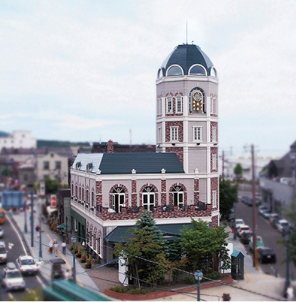

|
|
小樽洋菓子舗ルタオ |
今日も、出会う。ルタオルタオは、毎日の生活のなかで出会う小さな出来事に お菓子作りのヒントがたくさんあるのではないかと思っています。 季節の移り変わりやお天気、お客さまとかわす会話。 お菓子を選んでいるお客さまのキラキラとした眼差し。 お菓子作りの厨房にも出会いがあります。 新しい素材、レシピの確認、新作スイーツの試み。 そんな毎日の出会いが積み重なって、 お客さまに喜んでいただけるお菓子につながっている。 そして、もっともっとルタオらしいお菓子がつくれるといいなと思っています。 ルタオはたくさんの出来事に、今日も出会います。 |